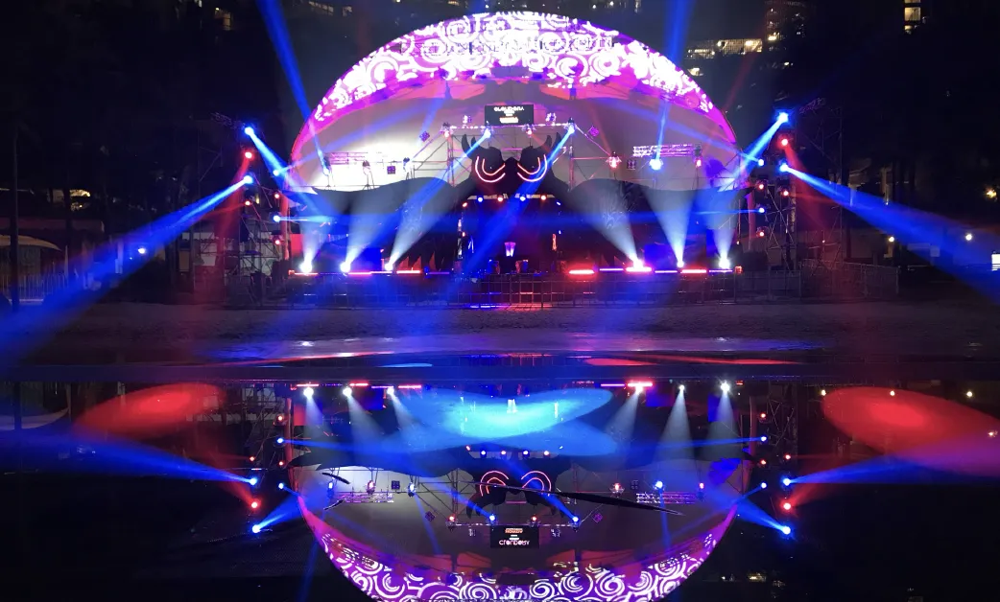
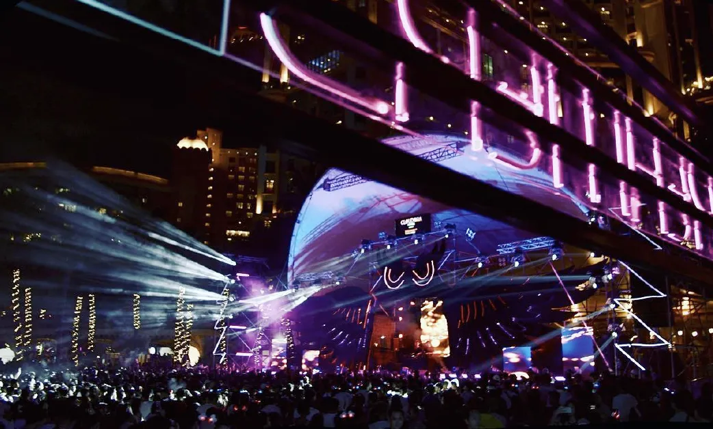
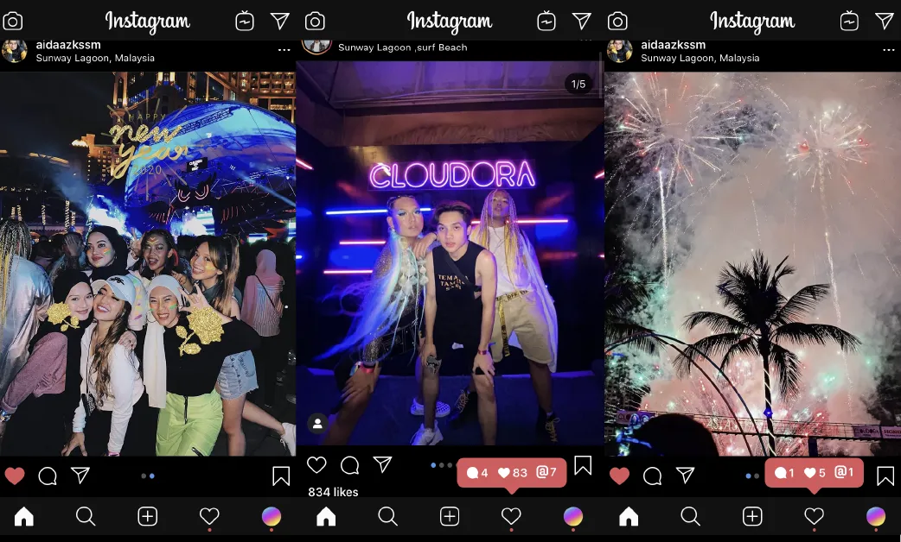
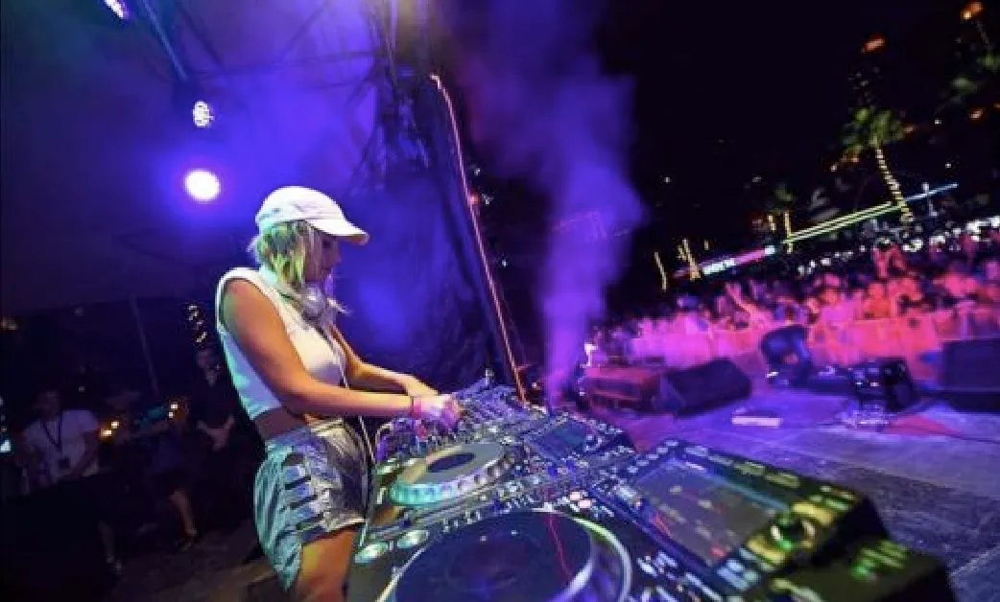
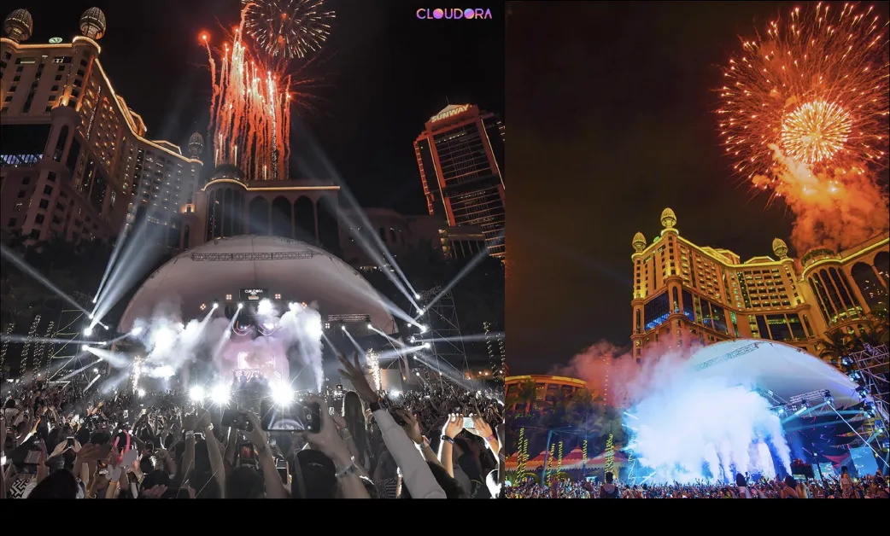

01 - Lineup Curation & Artist Relations
Curated live music and DJ programming with artist coordination aligned to event identity and countdown positioning.
Large-scale New Year's Eve festival organized by Tecship Corp on 31 December 2019, combining live entertainment, sponsor delivery, audience operations, and venue-wide experience execution at Sunway Lagoon.
10,000+
Attendees
31 Dec
New Year's Eve date
Intl + Local
DJ lineup
Lead
Organizer role





Cloudora Festival was delivered as a large-format New Year's Eve event at Surf Beach, Sunway Lagoon, built around live music, DJ performances, sponsor integration, immersive visual elements, and a midnight countdown experience.
As organizer, Tecship Corp led the event across production coordination, artist handling, crowd movement, entry processing, vendor integration, sponsor visibility, and end-of-night countdown execution for a crowd of more than 10,000 attendees.
Curated live music and DJ programming with artist coordination aligned to event identity and countdown positioning.
Main stage execution with sound engineering, lighting, and visual effects for live-performance reliability.
Ticket verification, access control, and orderly intake management for high-volume entry windows.
Movement control, density management, and safety oversight across audience-facing areas.
Sponsor placements and activation delivery integrated into the festival journey and visibility plan.
Vendor village planning and operational integration with live programming and attendee circulation.
Immersive glow and LED installation planning to support visual identity and attendee engagement.
Timed midnight sequence control for countdown staging and fireworks finale execution.
On-ground support for attendee guidance, issue resolution, and smooth navigation across zones.
Internal coordination across artists, crews, staging, suppliers, and logistics support flows.
Centralized command for timing, escalation, production changes, and inter-team synchronization.
Managed audience egress, equipment recovery, vendor shutdown, and safe site handback.
Operational Zones
Key Performance Metrics
Cloudora required simultaneous control of production quality, audience movement, sponsor visibility, venue energy, and countdown precision.
Operational controls covered entry control, production control, crowd safety, commercial integration, experience design, and finale execution under Tecship Corp's lead organizer role, with both international and local DJ programming on the bill.